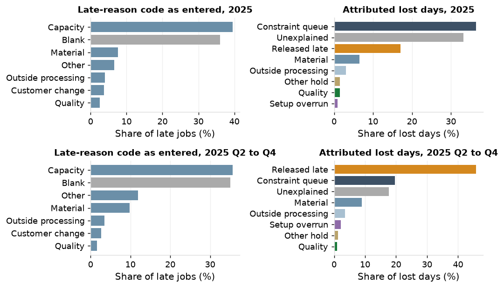

Project 2 A3
Why jobs are late
Background and problem
36% of the 1,226 late jobs of 2025 carry no reason code and "capacity" is 62% of the codes entered (35% and 55% in Q2 to Q4).
The entered code agrees with the attributed cause on 35.8% of coded late jobs against 31.3% by chance (31.3% against 26.1% in Q2 to Q4).
Current condition

Late-reason codes as entered and lost days by attributed cause, 2025 and Q2 to Q4.
Target
A reason recorded on every late job at the moment it turns red.
Analysis

Late jobs of 2025 with a code entered, by code and largest attributed cause.
- Year: constraint queue 36% of 4,647 lost days, unexplained 33%, released late 17%. Q2 to Q4: released late 46% of 1,232, the largest cause on 191 of 379 late jobs.
- Q2 to Q4 by work center: order entry 46%, laser 12% (material waits at the first cut), robotic weld 11.5%, brakes 8%.
- The top ten customers hold 54% of lost days for the year; all are key accounts.
- 94 jobs coded "capacity" were released late; material was coded on 33 of 275 late jobs with a material wait.
Countermeasures
| Action | Owner | When |
|---|---|---|
| Replace the late-reason code with a buffer status record: time buffer in thirds, reason captured when a job turns red, weekly review | Production control manager | March 2026 |
| Require the rush flag and a named approver on every promise inside the standard lead time (P7 sizes the quote) | Customer service manager | February 2026 |
| Extend the kit check to stock sheet items (P6 measures kit completeness) | Purchasing manager | March 2026 |
Results
Measured baseline for 2025: 1,226 late jobs and 4,647 lost days (379 and 1,232 in Q2 to Q4); 33% of lost days unexplained (18%); 76 late jobs with no cause assigned (6.2%).
Follow-up
Weekly buffer status review by production control; the share of late jobs with no reason recorded, reported at each review.